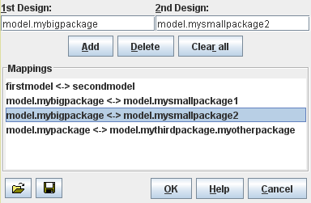

Contents > 4 The SDMetrics User Interface > 4.9 The View 'Design Comparison' > 4.9.4 Mapping Design Elements
4.9.4 Mapping Design Elements
To calculate metric deltas, SDMetrics matches the design elements of
the first design with the elements of the second design. Matches are
based on the fully qualified names of the design elements (see
Section 4.2.2.1 "Qualified Element Names"). This causes problems if a model element such as
package has been renamed between designs. Because of the name change,
the package and all of its contents can no longer be matched between
designs. The package under its old name is considered to be deleted,
and newly added under its new name.
To improve the element matching for renamed elements, you can define
explicit element mappings. Click the button to open the element mappings dialog.

Figure 16: Element Mappings
Enter the old name of the renamed element in the first design in the
upper left text field. Enter the new name of the element in the second
design in the upper right text field. Press "Add" to add the mapping
to the list of mappings below.
To remove a mapping from the list, select the mapping on the list and
then press the "Delete" button. To remove all mappings, press the
"Clear all" button. Click the  button to save the current list of mappings to a file, and
the button to load a
previously saved list. Or drag and drop the mapping file anywhere into
the mappings dialog or the design comparison view.
button to save the current list of mappings to a file, and
the button to load a
previously saved list. Or drag and drop the mapping file anywhere into
the mappings dialog or the design comparison view.
Mapping Examples
- The model names of the designs to compare may differ.
If the name of your first model is firstmodel, and the name of
your second model is secondmodel, all qualified element names
start with "firstmodel." and "secondmodel.", respectively.
Define the mapping firstmodel <-> secondmodel so that the
elements are properly matched.
- An element has been renamed and/or moved.
A package model.mypackage of the first design has been renamed
to myotherpackage and moved to be a subpackage of a third
package model.mythirdpackage in the second design.
Define the mapping model.mypackage <->
model.mythirdpackage.myotherpackage to match the package and all
elements within.
- An element has been split, or joined with another element.
A package model.bigpackage has been split into two packages
model.smallpackage1 and model.smallpackage2.
Define two mappings: model.bigpackage <->
model.smallpackage1 and model.bigpackage <->
model.smallpackage2. That way, elements in
model.smallpackage1 and model.smallpackage2 will be
mapped to elements in model.bigpackage.
| Prev |
Up |
Next |
| Section 4.9.3 "Comparative Descriptive Statistics Table" | Contents | Section 4.9.5 "Exporting Metric Deltas" |